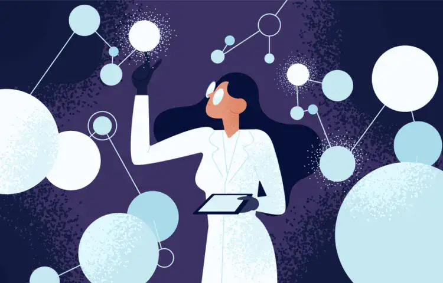

ENTRE VOUS ET MOI
QUI SUIS-JE ?
Je suis Axel TOUCHAIS et j’ai 18 ans. Etudiant en première année de BUT Métiers du Multimédia et de l’Internet à Montbéliard, j’ai créé ce site de A à Z dans le cadre de mon projet individuel de premier semestre. L’exercice consistait à créer un site web, optimisé pour iPhoneX, au sujet pour lequel des gens se battent chaque jour peu connu du web : le féminisme. Nous devions parler de ce mouvement en présentant une figure actuelle en reflet d’une figure du passé. Enfin, nous devions utiliser une oeuvre en lien avec notre sujet afin de mettre encore un peu plus la lumière sur ce qui est encore trop peu connu aujourd’hui.
ME CONTACTER
AUTRES PROJETS
Si mon travail vous a plus, je vous invite à découvrir les projets de mes camarades de MMI TP C2, qui s’adonnent au même exercice mais traitent des facettes différentes du féminisme.
Flavie SCHALTENBRAND - « Les femmes d’orient »
Valentin THOLOMIER - « Femme pour toujours »
Luca THOMESSE - « Le féminisme dans l’art »
Paul TRESSE - « Féminéthique »
Arnaut VASSEUR - « Feminism-Discovery »
Alexis VASSEUR - « Culture du féminisme »
Zoé-Augustine VICAT - « Woman Art Nation »
Willy VUILLAMIER - « A new look »
Sacha WICKY - « Kahlo »
ET VOUS ? QU’EN PENSEZ VOUS ?
Nous avons réalisé une interview micro-trottoir pour savoir ce que vous pensiez du féminisme.
Si vous êtes curieux et que vous voulez en savoir davantage sur les oeuvres et les évènements qui composent les articles de La Scientifique Oubliée, je vous invite à cliquer ci-dessous.